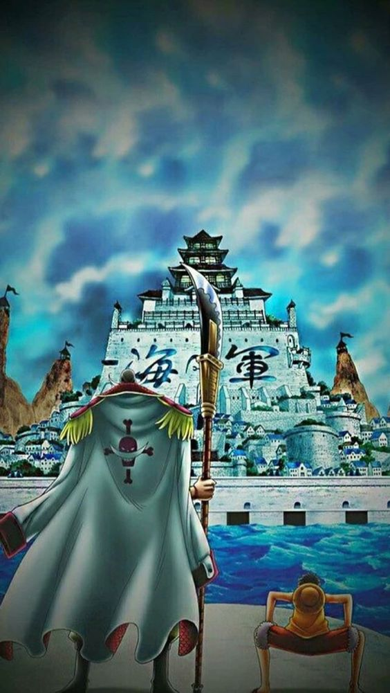

Episódios: 385 a 516
A saga tem início com o marcante arco Arquipélago de Sabaody, nome da 10ª ilha do Grand Line à qual os Chapéus de Palha chegam. Lá, Luffy e sua equipe precisarão enfrentar oponentes como uma quadrilha de comércio de escravos e o perigoso grupo de novos piratas Onze Supernovas. O arco marcou um ponto de grande crescimento para os Chapéus de Palha. Isso porque eles são terrivelmente derrotados por inimigos como o Almirante Kizaru, o Pacifista, Bartolomeu Kuma e Sentomaru. Após ser derrotado por Kuma, Luffy é lançado para a ilha Amazon Lily. esta ilha é habitada apenas por mulheres que matam quaisquer homens que apareçam. Todos os demais membros da tripulação também acabam separados em diferentes locais, passando por desafios variados. Luffy quer fugir da ilha e procurar os piratas de sua tripulação. Contudo, ele precisa resgatar seu irmão Ace da prisão submarina Impel Down, onde consegue se infiltrar com a ajuda de Boa Hancock, mas de onde será ainda mais difícil fugir. Mas Luffy não chega a tempo, Ace foi transferido para Marineford, sede da Marinha. Para resgatá-lo, ele foge de Impel Down na companhia de Jinbe, Emporio Ivankov, Crocodile, Mr. 1, Mr. 3, Buggy e Inazuma rumo à Marineford. A guerra vai se preparando com o perigoso confronto entre os poderes titânicos do protagonista, da Marinha, do Barba Branca e dos demais piratas que tentam derrubar o Imperador. A saga é concluída com o dramático arco Pós Guerra de Marineford causou um pandemônio global. Luffy, por sua vez, não apenas está em estado crítico de saúde - após sua fuga de Impel Down e seu confronto com a Marinha - como está completamente abalado pela morte no conflito. Sob a liderança da Capitã Pirata das Amazon Lily, os Piratas do Coração levam Luffy para Amazon Lily, para ele se recuperar. Enquanto isso, o Governo Mundial toma medidas alarmantes. Consolado por Jinbei, Luffy recupera forças físicas e emocionais para reencontrar sua tripulação. Esta saga ainda contou com o arco Litte East Blue, composta por quatro episódios feitos apenas para o anime com o objetivo de introduzir a trama que seria continuada no filme One Piece: Strong World.
